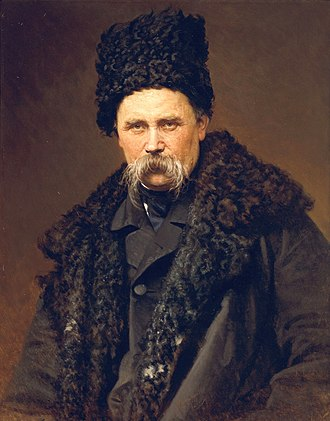

Taras Shevchenko
a Ukrainian poet, writer, artist, public and political figure
Detailed Overview of Shevchenko’s Life and Work
Early Life and Background
Birth and Family: Shevchenko was born on March 9, 1814, in the village of Moryntsi in what is now Cherkasy Oblast, Ukraine. His parents were serfs, and his early years were marked by the harsh realities of serfdom. Orphaned by the age of 11, Shevchenko was left to fend for himself, which deepened his empathy for the oppressed and influenced his later works.
Artistic Talents: Despite his difficult circumstances, Shevchenko showed a natural talent for drawing and art from a young age. He was taken into the household of his owner, Pavel Engelhardt, where he worked as a houseboy and was allowed to learn from local artists. His master recognized his talent and eventually took him to St. Petersburg, where Shevchenko was introduced to prominent Russian artists.
Freedom and Education
Liberation from Serfdom: In 1838, Shevchenko's artistic talents were recognized by a group of influential Russian artists, including Karl Bryullov, who organized a lottery to buy his freedom. Shevchenko was liberated from serfdom at the age of 24, a pivotal moment that allowed him to fully pursue his artistic and literary passions.
Imperial Academy of Arts: After gaining his freedom, Shevchenko enrolled in the Imperial Academy of Arts in St. Petersburg. Under the mentorship of Karl Bryullov, one of the most prominent Russian painters of the time, Shevchenko honed his skills in painting and drawing. He excelled in various genres, including portraiture, historical painting, and landscapes.
LiteFrary Achievements
Kobzar: Published in 1840, "Kobzar" is the most famous collection of Shevchenko's poetry. The initial publication contained only eight poems, but it resonated deeply with the Ukrainian people. The collection grew over time as more of his works were added, eventually becoming a symbol of Ukrainian national identity. The word "Kobzar" refers to the itinerant bards of Ukraine, who sang of the struggles and history of the Ukrainian people.
Poetic Themes: Shevchenko's poetry often explored themes of national oppression, social injustice, and the dignity of the common people. His works expressed a deep love for Ukraine, its culture, and its people, while also critiquing the imperial policies of the Russian Empire.
Prose and Other Writings: While Shevchenko is best known for his poetry, he also wrote prose, including nine novellas, a diary, and an autobiography. These works were written primarily in Russian and provide valuable insights into his thoughts on society, politics, and his personal experiences.
